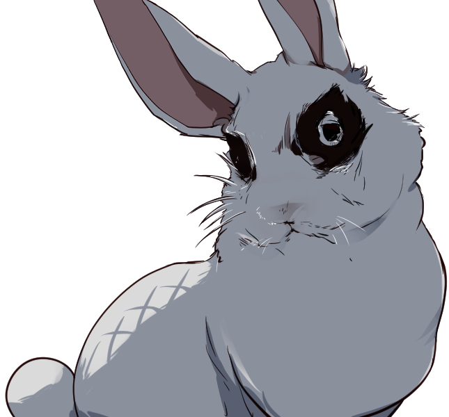

Mother 最終話 灯りは消えない
- 推奨人数
- 3人
- プレイ時間
- 5時間
- リミット
- 10サイクル
概要
前回、＜グンマ＞の最強のヌシ"暴食の冥焉"を撃破したPCたち。ついにすべてを終わらせるため、マザーの本拠地＜トウキョウ スカイツリー＞へと向かいます。マザーを守る番人サタンとの死闘を越え、ついに"マザー"本人と対峙し、この長き戦いに終止符を打ちます。
キャンプフェイズ
プロローグ
グンマ戦での疲れが取れず、あれから泥のように眠り続け、PCたちは１ヶ月間近くグッタリとしていました。
ニューエイジのPCがいれば超能力がさらに一部成長します。また、リルムやクルスとの防衛訓練、充分な栄養と環境など、他のPCの戦闘能力も向上します。最後の冒険の前に、PCたちにあった個別イベントを用意してあげましょう。
キャンプの仲間から最後の戦いに向けてアイテムを用意してもらえます
- カジオ
- 抗生物質
- スズ
- コカの葉
- マグ
- 嗜好品
- ラグナ
- 嗜好品
個別イベント（GM運用例）
最後の決戦を前に、PCそれぞれの過去やこれまでの絆に触れる個別イベントを挟みましょう。以下はその一例です。
- ▼例：かつての友との再会
- あるPCが、決戦の前に、案内役のスズと護衛のゴマちゃんと共に、静岡のとあるキャンプを訪れます。そこには、かつて生き別れになった大切な友人が、心を閉ざしたまま保護されていました。
- 声も出せず、食事も摂れない状態だったその子は、PCの顔を認めた瞬間、かすかに目を見開きます。再会を喜び合い、これまでの苦しみが涙となって溢れます。
- 「あの子をもう一度笑顔にしたい」――マザーを倒す理由に、また一つ、大切な想いが加わりました。
- ▼例：かつての夢
- あるPCは、失われた故郷の夢を見ます。まだ手足があり、家族や友人たちに囲まれていた、笑顔だけの日々。名前も、声も、もう思い出せません。しかし、大切な誰かの気配だけは、確かに残っています。
- 目覚める直前、ラグナの声が聞こえた気がしました。「……お前は居なくなるなよ。目立つなら、皆でだ」
- ▼例：ひそかな準備
- 理科の得意なPCが、何かを企んで理科室と屋上を行き来しています。決戦前夜、色付きの疑似花火を打ち上げ、子供たちと一緒に小さな星空を楽しみます。
セリフ例
- ▼描写
- 時刻は夕方頃。チヌレガラスがカアと鳴いています。食堂から"さまざまな料理"の香りが漂ってきます。ラグナの言った通り、あの戦いのあとは１度も襲撃はありませんでした。
- 好きなメニューを選んでください。①ビーフシチュー ②バーモントカレーライス ③ミネストローネもどきとチキン
- できることが増えたおかげで、料理を始めとした「得意」を見つける子供たちも出てきました。絵が得意、演奏が得意など、そういった発見をする余裕が出てきています。
- ▼マグ
- 「みんな、ゴハンだよ」「みんなのおかげで食材にも水にも、家畜にも余裕が出てきたんだ」
- ▼ラグナ
- 「子供たちも仕事を覚えるのがたのしいみたいだ」
- ▼描写
- 出発前夜、PCたち、マグ、クルス、カジオ、スズが集まって少し話をします。
- ▼ラグナ
- 「…………これから、皆はマザーを殺しに行く」
- ▼カジオ
- 「……行ってしまうのか……また、戦いに」
- ▼ラグナ
- 「２年の猶予があるとはいえ、急ぐ理由がある。俺たちニューエイジは、通常の人体とは生態が異なる。新生物の影響を受けているからだ」
- 「寿命もどうなるかわからん。……解剖知識もないから原因も突き止められなかったらしい」
- 「俺は弟子たちに、教えられることを全部教えておく。そしてそれを無駄にしないためにも、必ずマザーに打ち勝ってもらう」
- ▼クルス
- 「…………多分、今までの情報が正しければ、マザーさえ殺せば、新生物たちの生命は断ち切られる」
- ▼カジオ
- 「悲劇の連鎖を断ち切れるのは君たちだけってことか……」
- ▼ラグナ
- 「新生物がいる不安を抱いたまま、前に進むことはできない。俺は、文化を取り戻した楽しい世界を見たいんだ。だから、急いでもらうんだ。それに……リルムの顔がちらつくんだ」
- ▼クルス
- 「……この平和も長くは続かないだろう。もって数年だ。敵陣営も消耗している。決着をつけるなら今だ」
- 「＜スカイツリー＞へ向かい、関東一帯を攻撃しているマザーを倒そう」
- ▼ラグナ
- 「関東一帯どころではない、もう世界中がやられている」
- ▼クルス
- 「＜スカイツリー＞のフィールドは拡大していないみたいだが、内部は強力に護られている。全力で突破しよう」
- ▼カジオ
- 「あ………ああ……そうだ。こいつを持ってってくれ」（抗生物質x1を受け取りました）
- 「なあ……本当に……行くのか」
- ▼ラグナ
- 「俺も最初は止めようと思った……が。リルムの顔がちらついた」
- ▼マグ
- 「７サイクルぶんの食糧を用意したよ……」
- ▼ラグナ
- 「連れて行きたいやつがいれば言ってくれ。最後の戦いには間に合うようにする」（ボスとの戦闘時、ラグナ・クルス・スズの３人のNPCのうち選んだ一人をを好きなタイミングで参戦させられます）
目的：悲劇に決着をつける。＜このセッションは、＜マザー＞を倒し、世界を救うことで成功となります＞
最後のキャンプフェイズが終わると、＜フィールド＞へ向かうことになります。
探索フェイズ
探索者たちは恐れることなく＜フィールド＞の中へと入っていきます。トウキョウ スカイツリーのフィールドに潜入しました。多少の不快感はあれど、問題無く行動できます。
中は、様々な環境や廃墟が積み重なった、「塔」と化していました。＜フィールド＞の入り口……１階に侵入すると、突然周囲が暗くなりました。なんとか暗闇に目が慣れてきて、物の輪郭が分かるようになってくると、たくさんの石碑が並べられているようです。それは人類の歴史を刻んだものでした。
第1チェックポイント：人の歴史
- 環境
- 暗闇
- 暗闇
- 「ライト」や「たいまつ」などの明かりを持っていない限り、PCの行為判定にマイナス1の修正がつく。「たいまつ」は1サイクルで1つ消費される。
描写
マザーの本拠地１階。真っ暗闇です。
オブジェクト：廃店
| d6 | イベント |
|---|---|
| 1 | 何も見つかりませんでした。早めに切り上げて寝る事にしました。全員体力+1。寝袋があるならさらに＋１。 |
| 2 | 子供用のおもちゃ箱から「胡椒玉」「爆竹玉」を見つけました。スリング専用アイテムです。 |
| 3 | いくつかの炭を発見しました。「火付け道具」と「たいまつ」を見つけました。 |
| 4 | [2d6]ジャーキーぶんの保存食を発見しました。消費期限の近いものをその場で食しました。気力が3点回復します。 |
| 5 | シェルターを発見しました。生存者はいませんが、[3J]以下の好きなアイテムを3つ獲得できます。 |
| 6 | 宝物発見！ [缶詰]を１つ見つけました！ さらに[15J]以下の好きなアイテムを1つ獲得できます。 |
案内人
正解の道を知っているのはホタルウサギだけです。彼を楽しませなければ、先へ進むことはできません。この障害は突破判定に２回成功する必要があります。用が済んだら1Jに変えてしまってもいいでしょう。
障害：案内人
指定特技：《歌う》 or 《料理》
- ▼ホタルウサギが喋りだしてもよい空気の時限定
- 「おや……？ 人間……？ と、変異した人間か。マザーの力が弱まったのかな。この塔に人間が入ってこられるなんて」
- 「ここは旧生物、"人類"の歴史博物館になる予定の場所なんだ。人類の子供による抵抗が意外なほど強力でね、魅力を感じたマザーが、人類のことをいくつか残してやろうと考えたそうだ」
- 「……ひょっとして"共存"とか考え始めちゃったのかな。いまさら人類と"共存"なんてムリだよね。もうぶつかりあうしかないんだから」
移動
冒険者たちは、暗い階層を攻略し、次のチェックポイントへと向かいます。次のチェックポイントに進む際に、「ランダムエンカウント表」を振ります。
| d6 | 説明 |
|---|---|
| 1 | ツノウサギ[1D6+PT人数]体と戦闘になります。 |
| 2 | スカイナイフ[1D3]体と戦闘になります。 |
| 3 | ヨロイバチ[PT人数÷2]体と戦闘になります。 |
| 4 | ツノウサギ[1D6]体と戦闘になります。 |
| 5 | オニトンボ[1D6+PT人数]体と戦闘になります。 |
| 6 | ランダムエンカウント表Bを振ります。 |
最強のヌシもすでに倒されているため、敵テーブルは初期のものに戻っています。もうまともな強敵は残っていません。表Bの結果は以下の通りです。
| d6 | 結果 |
|---|---|
| 1〜3 | 何も起きません。 |
| 4 | 物資を発見します。サイクル＋１。 |
| 5〜6 | 旅の途中で行き倒れた最後の生存者「ヒロコ」と出会います。彼女を看取ってあげるかどうかは、PC達の判断に委ねられます。 |
第2チェックポイント：螺旋階段
次のエリアに到着しました。そこは、階段の乱立した巨大なフロアでした。
- 環境
- 密林 ＆ 広漠
- 密林
- 密林や見通しの悪い屋内など。空気のおいしい場所。全アビリティの反動が-1される。反動は1未満にはならない。また、身を潜めて隙を伺うことで攻撃をあてやすくなる。命中判定にプラス1の修正がつく。
- 広漠
- フィールド内はとても広大だ。行けども行けども終わりの見えない地形に気が滅入る。サイクルの終了時に【気力】が2点減少する。この効果で1未満にはならない。
描写
マザーの本拠地、第２のチェックポイントです。
オブジェクト：がれき
| d6 | イベント |
|---|---|
| 1 | 「コカの葉」を１枚見つけました。しかし大きな音を出してしまい、敵が襲ってきます。ランダムエンカウント表を振ります。 |
| 2 | 「嗜好品」を２つ見つけました。 |
| 3 | 「なんこう」を２つ見つけました。 |
| 4 | [1d6]ジャーキーぶんの保存食を発見しました。消費期限の近いものをその場で食しました。気力が3点回復します。 |
| 5 | シェルターを発見しました。生存者はいませんが、[3J]以下の好きなアイテムを3つ獲得できます。 |
| 6 | 宝物発見！ [15J]以下の好きなアイテムを1つ獲得できます。さらに[缶詰]を獲得します。 |
最難関の迷路
螺旋階段の迷路です。正解の道は１つだけ。この障害は突破判定に３回成功する必要があります。失敗すると体力/気力が1D6点減少します。
障害：最難関の迷路
指定特技：《探索》 or 《歩く》
移動
冒険者たちは、螺旋階段の迷路を突破し、次のチェックポイントへと向かいます。次のチェックポイントに進む際に、「ランダムエンカウント表」を振ります（表は第1チェックポイントと共通です）。
第3チェックポイント：回廊
冒険者たちは無限回廊にやってきました。どこまで歩いても同じ風景。
- 環境
- 広漠 ＆ 領域
- 広漠
- フィールド内はとても広大だ。行けども行けども終わりの見えない地形に気が滅入る。サイクルの終了時に【気力】が2点減少する。この効果で1未満にはならない。
- 領域
- ＜フィールド＞の中でも特に敵が得意とする地域。プレイヤーの行う全判定が-1される。探索中ファンブルが発生すると、体調を崩して1D3のダメージを受ける。また、戦闘中にPCがファンブルするたびに、敵1体が追加行動を得る。変異の進んだ＜ニューエイジ＞は全判定が+1される。
描写
マザーの本拠地、第３のチェックポイント。無限に続く回廊です。
オブジェクト：がれき
| d6 | イベント |
|---|---|
| 1 | 「コカの葉」を１枚見つけました。しかし大きな音を出してしまい、敵が襲ってきます。ランダムエンカウント表を振ります。 |
| 2 | 「嗜好品」を１つ見つけました。 |
| 3 | 「なんこう」を１つ見つけました。 |
| 4 | [1d6]ジャーキーぶんの保存食を発見しました。消費期限の近いものをその場で食しました。気力が3点回復します。 |
| 5 | シェルターを発見しました。生存者はいませんが、[3J]以下の好きなアイテムを3つ獲得できます。 |
| 6 | 宝物発見！ [15J]以下の好きなアイテムを1つ獲得できます。さらに[缶詰]を獲得します。 |
隠し扉
無限に続く回廊のなかから隠し扉を探し出さなければなりません。この障害は突破判定に２回成功する必要があります。
障害：隠し扉
指定特技：《見つける》 or 《休まない》
移動
冒険者たちは、隠し扉を開け、次のチェックポイントへと向かいます。次のチェックポイントに進む際に、「ランダムエンカウント表」を振ります（表は第1チェックポイントと共通です）。
第4チェックポイント：文化の名残
冒険者たちは、とうとう最後のチェックポイントにたどりつきました。
- 環境
- 平原
- 特になし。
描写
マザーの本拠地、最後のチェックポイント。懐かしい気持ちにさせられる場所です。
オブジェクト：廃店
| d6 | イベント |
|---|---|
| 1 | 「コカの葉」を１枚見つけました。しかし大きな音を出してしまい、敵が襲ってきます。ランダムエンカウント表を振ります。 |
| 2 | 「嗜好品」を１つ見つけました。 |
| 3 | 「なんこう」を１つ見つけました。 |
| 4 | [1d6]ジャーキーぶんの保存食を発見しました。消費期限の近いものをその場で食しました。気力が3点回復します。 |
| 5 | シェルターを発見しました。生存者はいませんが、[3J]以下の好きなアイテムを3つ獲得できます。 |
| 6 | 宝物発見！ [15J]以下の好きなアイテムを1つ獲得できます。さらに[缶詰]を獲得します。 |
星蛍
部屋の中を飛び回る星蛍は、マザーのいる場所を知っています。話し合えば分かってくれるかもしれません。
障害：星蛍
指定特技：《伝える》
蛍と心が通じあいました。星蛍は伝えてくれます。「マザー 空の上 見守っている」
移動
次のチェックポイントに進む際に、最後の「ランダムエンカウント表」を振ります（表は第1チェックポイントと共通です）。
決戦フェイズ
サタン戦
ここが最後の場所。待っていたのは……＜マザー＞を護る最後の番人でした。日本語で話しかけてきます。
- ▼サタン
- 「グンマのフィールドが消滅した時から、この日が来ることを覚悟していた」
- 「まさか人の身で"暴食の冥焉"を殺すとは……賞賛に値する。私は＜サタン＞、母を護る者」
- 「……しかしだ。"暴食の冥焉"、あれは間違いなく、我々のなかで最強の生物。"暴食の冥焉"が敗れた今、諸君の有利は認めざるを得ない」
- 「……その不利を理解した上で、諸君に最後の取引を持ちかけよう。人をやめ、新生物へと生まれ変わり、共に歩んで行かないか？ なれば、さらなる進化をもたらしてやろう」
- 「"ニューエイジ"なる薄命の貴様も、永遠の命を得る事が出来る」
サタンは、ミュータント側に与し、新生物へと生まれ変わるかどうかをPCたちに問いかけます。生まれ変わった瞬間、「旧人類を滅ぼす」新生物陣営の者となり、今ここで人間サイドとキャンプの民との戦闘になります。断れば、このままサタンを、そしてマザーと戦い、殺すことになります。返事を待つ間、これまでのPCたちの思い出を想起させ、答えを後押ししてあげましょう。
- ▼サタン（返事のあと）
- 「そうでなければ、抗う者よ。狂宴を始めよう。さあ、往くぞ」
- ▼描写
- キャンプで選んでいたNPC（ラグナ、クルス、スズ）が合流しに来ます。みんなの決意を見て安心しているようです。サタンは襲いかかってきます。
この戦闘は奇数ラウンドでサタンが追加行動を得ます。変調で5ダメージを受けます。ラウンド数を数えましょう（6R目安）。
戦闘
| 名前 | レベル | タイプ | 体力 | 気力 | 特技 | アビリティ | ドロップ | 解説 |
|---|---|---|---|---|---|---|---|---|
| サタン | 15 | ミュータント | 100 | 35 | すべて（ただし全判定-1） | 【スクリーム】【死神の呼び声】【眼光】【呪言】【揺らぐ運命】【最後の試練】【恒常性：受】【俊敏】 | なし | マザーを護る最後の番人。宇宙を観察し回っている。現在はマザー側についている。 |
| 名前 | グループ | タイプ | 反動 | 指定特技 | 対象 | 効果 |
|---|---|---|---|---|---|---|
| スクリーム | ミュータント | 攻撃 | 0 | 《聴く》 | 2体 | この攻撃の命中判定は＋２される。対象に[4D6]点のダメージを与える。 |
| 死神の呼び声 | ミュータント | 攻撃 | 3 | 《受ける》 | 単体 | 目標の体力と気力に3D6点のダメージを与え、『呪い』の変調を与える。 |
| 眼光 | ミュータント | 攻撃 | 5 | 《見つける》 | 全体 | この攻撃の命中判定[+3]。敵全体に『毒』『炎上』『麻痺』『捕縛』『転倒』『重傷』『暴露』『呪い』のすべての変調を与える。使用回数１。 |
| 呪言 | ミュータント | 攻撃 | 4 | 《歌う》 | 3体 | 対象に2D6点のダメージを与え、ランダムな変調を与える。[1]毒 [2]炎上 [3]麻痺 [4]捕縛 [5]転倒 [6]重傷 [7]呪い |
| 揺らぐ運命 | ミュータント | 割込 | 3 | - | 自身 | 使用回数：３。ダイスを振り直せる。 |
| 最後の試練 | ミュータント | 常駐 | - | - | 自身 | 条件:【体力0以下】。体力が0になった時点で戦闘が終了する。冒険者たちに下記【最後の試練】を与える。中断させることはできない。 |
| 恒常性：受 | ミュータント | 常駐 | - | - | 自身 | 変調を自動で無効化する。ただし変調を無効化するたびに[5]点ダメージを受ける。 |
| 俊敏 | ミュータント | 常駐 | - | - | 自身 | 奇数ラウンドで追加行動を獲得する。 |
- ▼サタンの体力が0になったら
- 「ふふ……冥焉を殺すような人類に、私が敵うはずもない。これが最後の攻撃だ」
- 「余力を残して＜マザー＞に会いたければ、諸君らは犠牲を払わなければならない」
サタンのコマの説明文が【最後の試練】だけに変わり、以下のアビリティが発動します。
| 名前 | グループ | タイプ | 反動 | 指定特技 | 対象 | 効果 |
|---|---|---|---|---|---|---|
| 最後の試練 | ミュータント | 攻撃 | - | ＜必中＞ | 全体 | 目標の体力と気力に[120]点のダメージを与える。[食糧][矢弾]を除くアイテム（装備中や袋内のアイテムも選択可）を犠牲にすることで、犠牲にしたアイテムひとつにつき全員が受けるダメージを[5]点ずつ軽減できる。※＜浸食の進んだニューエイジ＞はこの攻撃を無効化する。 |
共闘しているNPCも、自分の持ち物を進んで犠牲にしてダメージを軽減してくれます。
NPCはなんこうx4、嗜好品x4、コカの葉x4 を所持しています
描写例
- ▼ クルス ( NPCにクルスを選択している場合の例 )
- 「僕の なんこうx4 嗜好品x4 コカの葉x4 を捧げよう（６０軽減）」
- 「あと８０点だ」
- ▼サタン（決着後）
- 「見事也。諸君は私を討ち、未練を問う"最後の試練"をも突破した。"暴食の冥焉"を倒したその力……正に本物。私が敵う筈もない」
- 「そしてひとつ、教えておこう。我々がここまでして"マザー"を守る意味を。ミュータントたちの生命力、多様性、成長速度。如何にしてこれを保っているか」
- 「星の母、"マザー"がエネルギー源となっている。"マザー"が死ねば、今いる新生物たちはすべて生命力を保てなくなり、いずれ事切れるだろう」
- 「ゴールテープは近く、そして脆い」
- 「私の＜フィールド＞を解除しよう。この出会いを祝福する」
- ▼描写
- サタンは去っていきました。サタンとの戦闘終了後、全員の変調が解除されます。
- （NPCが力尽きていれば、体力1で無理矢理立ち上がってもいい）
気付くと、見知らぬ美麗な場所に立っていました。
チェックポイントZ：最後の場所
- 環境
- 平地
- 特殊効果なし。帰還不可。
ここから先に進めば＜マザー＞がいます。＜マザー＞を倒せば、すべてが終わります。サイクルの消費はありません。１ラウンド経過すると、＜マザー＞との戦闘に移行します。最後の行動が可能です。※ここではマルチワークが使用できません。探索表・休憩表はともに［7］固定です。障害・オブジェクトはありません。
たった３人の子供（PC）に人類の運命が託されています。気付けば、服も身体もボロボロです。後戻りはできません。
- ▼クルス
- 「マザーは、新生物に生命を供給している……」（マザーを即倒しに行こうと提案したのはクルスです）
- ▼描写
- マザーの生み出すミュータントにキャンプが襲われたときの記憶を思い出します。
- ▼カジオ
- 「リルムとは付き合い短くてさ。それなのに図々しい事を言うようだけどさ……あ、あ、あいつの……仇……討ってくんねえかな」
- 「……（PCたちの名を呼ぶ）。……」
- 「あ、あ、あいつの……仇……討ってくんねえかな」
マザー戦
ふと前を見ると、荘厳な神体が異常な存在感を放ち、こちらを見下ろしています。あなた達は、一目で「こいつが＜マザー＞だ」と確信します。
- ▼マザー
- 「…………人類よ。私は、"マザー"。常闇の海を揺蕩い、［知的生命］と［豊かな環境］を求めて進化する命」
- 「この星と人類のおかげで、私、"マザー"は初めて進化に成功できた。循環する肉体を得て、知識を得た。私が私という個を理解できたのも、この星と人類のおかげだ」
- 「私は、"マザー"。新たな命を繋ぎとめる者。私は、私たちの子を護らなければいけない」
- 「私自身、まだ理解と覚悟が追い付かないが……これから、どちらかが死に、どちらかがこの地を、取り戻すか、揺り籠とする」
- 「人類。……決着をつけよう」
- ▼描写
- マザーとの戦闘です。これが最後の戦いになります。クルス、ラグナ、スズが合流します。
2R目以降のラウンド開始時、マザーの種族がランダムで変更されます（1d6）。初ターンは【星】固定。追加行動時に【星の断末魔】が発動し、対象のアビリティ/特技が破壊されるたびに、今までのログから思い出深いやりとりを想起させてあげましょう（技術は消えても、思い出は消えません。マザーを倒せばもう戦いは必要ないのです）。
戦闘
| 名前 | レベル | タイプ | 体力 | 気力 | 特技 | アビリティ | ドロップ | 解説 |
|---|---|---|---|---|---|---|---|---|
| マザー | 30 | 星 | 125 | 40 | すべて | 【星の断末魔】【マザー】【適応】【行動不能・破壊・特殊効果無効】 | なし | 暴食の冥焉を産んだ＜マザー＞。＜マザー＞が倒れれば、現存している＜ヌシ＞も皆死滅する。形態変化も無し。これが最後の戦い。 |
| 名前 | グループ | タイプ | 反動 | 指定特技 | 対象 | 効果 |
|---|---|---|---|---|---|---|
| 星の断末魔 | 星 | 常駐 | - | ＜必中＞ | 全体 | ラウンド終了時に自動発動。対象の［アビリティ/特技］を１つ破壊する。破壊される［アビリティ/特技］はPCが選ぶ。 |
| マザー | 星 | 常駐 | - | - | 自身 | ▲毎ラウンド追加行動を行う。回避時に気力を消費しない。▲体力が[1]以下のとき、種族は[星]で固定される。▼死亡判定のダイスは[１]で固定。 |
| 適応 | 星 | 常駐 | - | - | 自身 | 2R目以降のラウンド開始時、マザーの種族がランダムで変更される（1d6）。初ターンは【星】で固定。詳細は下記「種族ごとの攻撃方法」を参照。 |
| 行動不能・破壊・特殊効果無効 | 星 | 常駐 | - | - | 自身 | 行動不能・破壊・特殊効果を無効化する（変調は有効）。 |
| 出目 | 種族効果 | 技 |
|---|---|---|
| (1)【星】 | 特になし | ■シューティングスター ＜必中＞ 対象：１体 目標の体力に[7d7]点の確定ダメージを与え、『捕縛』を付与する。＜浸食の進んだニューエイジ＞はこのダメージを半減する。 |
| (2)【ミュータント】 | 追加行動+1 | ■滅びの手 指定特技：《※利き腕》 命中固定[11]（回避難度+6） 目標の体力に[3d6]点、気力に[3d6]のダメージを与え、与えた体力ダメージをそのまま自身の体力として吸収する。さらに対象の防具をランダムに１段階破壊する。 |
| (3)【甲殻類】 | 受けるダメージ-5 | ◆スタークエイク 指定特技：《※消化器》 対象：全体 この攻撃の命中判定は[+3]される。敵全体に[3d6]点のダメージを与え、『炎上』させる。 |
| (4)【鳥】 | 回避+4 | ◆大嵐 指定特技：《※心臓》 対象：２体 この攻撃の命中判定は[+4]される。敵２体の体力・気力に[1d5]点のダメージを与え、[麻痺]させる。さらに対象のアイテムを２つ破壊する（破壊するアイテムはプレイヤーが選ぶ）。 |
| (5)【獣】 | 命中+4 | ◆捕食の宴 指定特技：《※口》 目標に[3d6+6]点のダメージを与え、[重傷][転倒][暴露]を与える。変調を持つ目標には[必中]となり、ダメージが[2D6]点増加する。 |
| (6)【植物】 | 即座に体力+5、全変調解除 | ◆別れの吹雪 指定特技：《※呼吸器》 目標に[1d24]点のダメージを与え、以下から追加効果を対象に選ばせる。①体力に[10]の確定ダメージ ②武器を１段階破壊 ③任意特技２つ消滅 |
セリフ例（想起される思い出）
【星の断末魔】でアビリティ・特技が破壊されるたびに、これまでの冒険の中で印象的だったやりとりを読み上げましょう。以下は例です。
- ▼記憶の例
- 「（キャンプでの何気ない会話）」「（初めて仲間になった日のこと）」「（誰かを看取った日のこと）」
- ▼マザー
- 「生きる覚悟が運命を覆すか。それは叶わず死に至るか。私達はそれを決定づけるだけでいい」
- ▼PC
- 「私達にも守るものがあるの、だから譲れない」「……みんなのために、あなたを倒す！」
- ▼描写
- あなた達の一撃で、マザーは倒れました。マザーの身体から眩しい光が溢れだし、地上に散らばっていきます。地球での戦いは、冒険者たちの勝利です。
- ▼サタン
- 「この戦い、汝らの完全勝利だ。マザーは死んだ。我らも消え行こう。永久に、さらばだ」
- ▼描写
- その瞬間、世界中の＜ヌシ＞が一斉に息絶え、凶悪な新生物たちも大人しくなりました。世界は新生物から救われました。マザーは死に、新生物への生命の供給も止まりましたが、＜ニューエイジ＞の身体には特に異変はないようです。
結果フェイズ
描写1: キャンプに戻って
キャンプに戻ると、子供たちが出迎えてくれます。「もう＜ヌシ＞はいないの？ もう誰も死なないの？！」地球ではもう＜ヌシ＞が現れることはありません。
- ▼カジオ
- 「俺の仕事もひとつ減るな」
- ▼マグ
- 「ほんと？！ ほんとに？！」……本当です。「…………マザーが倒れ、ヌシがもう出てこない。こんな奇跡みたいな日が来るなんて…………」
- マグは力が抜け、その場にへたれこみました。
- ▼スズ
- 「文化が戻ってくれば、商人の出番が増えるぞ……」
- ▼ラグナ
- 「そうだな。あらゆる人間がディズニー映画を見たり、ゲームをしたり、そんな世界を取り戻すんだ。これからは＜フィールド＞に怯えることなく生活することができる」
- 「マザー牧場にいたころは、ずっと絶望していた。お前らに会ってからは驚かされることばかりだ……」（ラグナは持っていたコップを落としてしまいました）「……っと。悪い。最近急にフッと力が抜けることが多くてな……」
- ▼スズ
- 「おいおい老人みてーだな、まだ１０歳にもなってねーくせに」
- ▼ラグナ
- 「……クク。そうだ。これからだよな。これからだ。お前らがマザーを倒してくれたんだ…………」
- ▼カジオ
- 「…………そうだ。食糧も鉄も水も、発電施設も、これから少しずつ強くして、街をつくろう。１人１つの家を持てるように」
- ▼クルス
- 「やりたいことが一気に増えたね。……でも、今日はすごく疲れた。決着がついたと思ったら、ドッと疲労感が押し寄せてきたよ」
- ▼ラグナ
- 「……ああ……………………新生物に脅かされる日々は終わったんだ。フィールドにも。みんなが理不尽に殺されることも、もうない……やったぞ、リルム……」
- ▼マグ
- 「ええ、今日はぐっすり休んで。寝床に大盛りのお肉を持っていくからね」
- ▼描写
- 冒険者達は、キャンプの皆と一緒に、具材がゴロゴロ入ったカレーライスを食べました。映画は「魔女の宅急便」でした。その日、散々ヒッパリダコにされ、ようやく眠れたのは、午前1時を回ったときでした。
エピローグ
次の朝
おいしい料理の香りで目が覚めます。朝食は、芋と豚肉と卵のシチューでした。いつの間にか車で外出していたクルスとラグナが帰ってきます。
- ▼ラグナ
- 「ただいま。グンマやトチギを見てきた。＜フィールド＞は無くなっていたが、相変わらずの荒れっぷりだった」
- ▼クルス
- 「僕はアイチを見に行ったよ。まだ誰も見に行ってない場所だ。アイチのほうにも＜フィールド＞の痕跡があった」
- ▼ラグナ
- 「関東以外も、もう＜ヌシ＞がいないとしても助けが必要そうだな。生存者がいるかもしれない」
- ▼クルス
- 「僕はこれからは、他の地域を探して、生存者を救出していこうと思う。ジッとしていられないタチなんだ」
- ▼ラグナ
- 「酔狂なやつだ。オレはこのキャンプの発展を手伝う。お前らもキャンプの発展を手伝ってくれ。平和に暮らし、働き、そしてかつての文化を取り戻すんだ」
- ▼カジオ
- 「かつて世界は、漫画や映画、ゲームといったエンターテイメントに溢れていたんだ。ディズニー映画だけじゃない、もっともっとすごくて楽しいものが見られたんだ」
- ▼クルス
- 「念のため聞いておくけど、僕と一緒に救出の旅に出る者はいないかい？ １人でも行く気だけど。しばらくここに帰るつもりはないから、食糧は途中から現地調達になるよ」
PCそれぞれに、以下から今後の身の振り方を選んでもらいましょう。
- ◎キャンプを手伝う
- ◎クルスと共に他の地域の救助に行く
- ◎１人で旅に出る
発展していくキャンプ
その後、PCたちのいたキャンプ「小学校」は、子供も大人もニューエイジも協力して働いて、どんどん発展していきます。秋頃に植えた小麦、米も収穫の時期となり、食料の不安も消え去りました。小麦の加工は試行錯誤を重ね続け、"おいしいパン"が広まるまでそう時間はかかりませんでした。
家畜たちはみんなで協力して育て続けた結果、"牧場"を各地に分けることになりました。食肉、タマゴ、牛乳、革、毛皮の流通が安定し、家畜専門家も生まれました。
１年が経つと、ひとつの街を再生させていました。高層ビルや、鉄道、インターネットといった技術にはまだまだ辿り着きませんが……遠い未来の出来事、というわけでもなさそうです。
ラグナ（１年後）

それぞれのその後（GM運用例）
PC・NPCそれぞれの「その後」を、GMとプレイヤーで自由に描いていきましょう。以下は一例です。
- ▼マグ
- 子供たちの身の回りの世話を続けます。娯楽も食事も発展したキャンプの中で、うっかり長生きしてしまうかもしれません。
- ▼カジオ
- 数年後には電話を完成させ、電波社会の礎を作ります。さらにその数年後には単独でテレビとテレビ局を復活させます。
- ▼スズ
- コカの葉の使用を禁じる法を作成。また、貨幣の価値を無理矢理復活させます。貨幣は様々な争いの種を生みますが、市民のやる気をブーストさせる引き金にもなります。後の「市長選挙」で落選してからは遊んで暮らし始めるかもしれません。
- ▼ラグナ
- キャンプ施設の建築、労働に精を出し、大工の後継者を育成します。後継者が育つのを確認した後、クルスの救助活動に合流。しかし隕石の影響で変異した身体はそう長持ちせず、数年後、旅の途中で静かに寿命を迎えます。最期を看取るのは、そばにいる仲間です。
- ▼クルス
- ラグナと共に日本を歩きまわり、救助活動を行います。ラグナを看取った後も、数百人の生存者を救助してはキャンプに送り届け、その後も旅を続けます。
ニューエイジのPCについて
ニューエイジは、隕石の影響で変異した人類です。無理に変異した身体は長続きせず、マザーが倒されてから数年後、徐々に弱っていき、寿命を迎えることになります。これは＜ニューエイジ＞のPCに用意された、避けられない、しかし尊厳を持って迎えられるべき結末です。
最期の迎え方は、プレイヤーと相談のうえで選びましょう。・キャンプで皆に看取ってもらう ・旅先で死を迎える ・１人で旅に出て死を迎える のいずれでも構いません。どの結末を選んでも、最期にあと数回、発言の機会を用意してあげてください（そのたびに体力/気力を任意で減らしていく形でも構いません）。
キャンプで看取る場合、マグ、クルス、スズ、カジオ、子供たち、そして他のPCたちが代わる代わる別れの言葉をかけてくれます。これまでの冒険で共有した、シチューの味、花火、映画、鐘の音――そういった小さな思い出の一つひとつが、かけがえのない別れの言葉になるでしょう。
長い時が経ち、そのPCを偲ぶ記念碑や劇場ホールが建てられます。愛用していた道具は、朽ちることなくいつまでも飾られ続けるかもしれません。関東に建てられた石碑には、マザーを倒した英雄達の名前が深く刻まれ、今後１０年、１００年と永遠に語り継がれていくことでしょう。
- ▼描写例
- 「あなたのこと、みんなが覚えててくれるからな」「いつでも帰ってきてね」
- 長い時が経ち、劇場ホールが建てられました。最初に建てられた劇場ホールの入り口には、そのPCが愛用していた道具がいつまでも飾られ続けました。
- 生きた証は、いつまでもこの世界を暖かく照らしてくれました。あなたたちの残してくれた人達は、もうどんな困難にも負けないことでしょう。